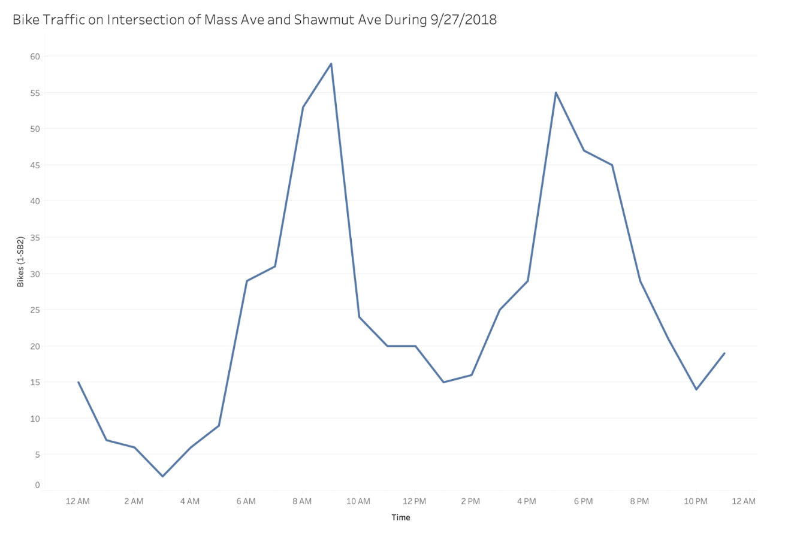
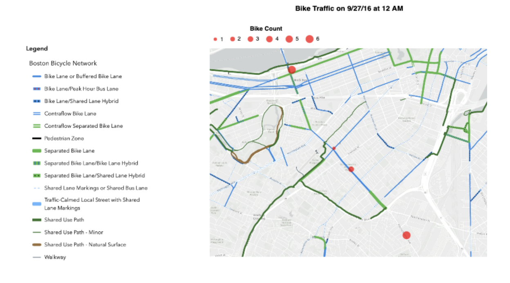
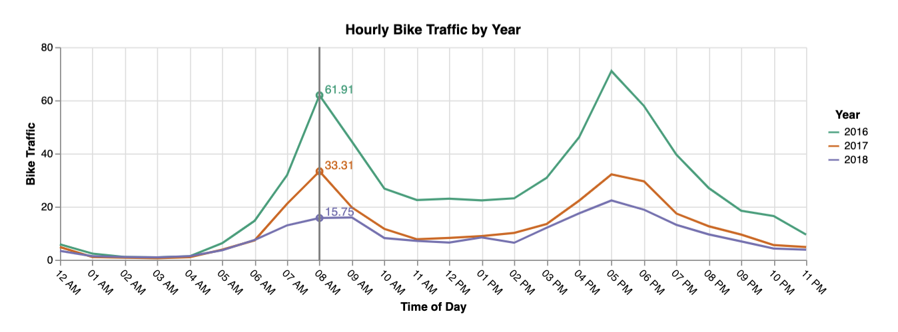

Group 11: Bikes and Bike Safety
Devyanshi Chandra, Will Feldman, Siddharth Mallareddygari, Sreevatsa Nukala

Bikers in Boston
Bikers in Boston
Our motivation for exploring data regarding bike safety was based on our desire to assist our community partner, the Mass Ave Coalition. The Mass Ave Coalition is working to make the community safer and more enjoyable. One of their tenents focuses on pedestrian safety, including people traveling on bikes. We are presenting data in a way that allows our partner to explore trends and make suggestions to make Mass Ave safer for cyclists. We took a holistic approach by exploring data relating to traffic, type of bike lanes, and location to allow the Mass Ave Coalition to identify places to begin their efforts. We want to make sense of these connections between bike traffic, location, and lanes. We are creating a visualization to help the Mass Ave Coalition understand where to start their efforts to make the streets safer for cyclists.
Our data source gives information about all traffic flow at intersections in the city and we can focus on bikes in this dataset. With this source, we are able to specify which intersections and streets we want to look at, what times traffic is at a peak, which types of vehicles other than bikes we want to consider, how many vehicles total were crossing an intersection, what speed they were traveling at, etc. Using this data set alone we are able to create dozens of visualizations about bike traffic specifically in the Mass Ave area.
Data Category
Data Type
Date
Quantitative
Time
Quantitative
Bikes
Quantitative
Motorcycles
Quantitative
Light Goods
Quantitative
Cars
Quantitative
Buses
Quantitative
Single Unit Heavy
Quantitative
Articulated Trucks
Quantitative
We are in a great position to help the Mass Ave Coalition because, based on our learnings from our interview with Carol, the organization has yet to work on bike safety within their organization. However, it is a critical part of their future vision. Protected bike lanes are essential to making riders feel safe in the city – but they are not present in all areas of Mass Ave. The Mass Ave Coalition would like help identifying the best spot to begin their efforts.
5
Where is the most bike traffic along Mass Ave?
Identify
Locate
Discover
6
Is there a difference in traffic flow between where there are unprotected vs. protected bike lanes?
Compare
Lookup
Discover/Present
Index (ID #)
“Domain” Task
Analytic Task (Low-level, “Query”)
Search Task (Mid-level)
Analyze Task (High-level)
3
Where along Mass Ave is it unsafe to bike?
Identify
Locate
Discover
1
Where along Mass Ave are protected bike lanes needed?
Identify
Locate
Discover
4
What is needed to make biking safer along Mass Ave?
Identify
Explore
Discover
2
Where are blue bike stops needed?
Identify
Locate
Discover
The most critical tasks are identifying where along Mass Ave is unsafe to bike and where protected bike lanes are needed. We are tackling tasks 5, 6, 3, and 1 (the four most important) in our visualization for the Mass Ave Coalition. Based on our research and interview with our community partner, we will be able to make the most significant impact on their efforts with this project focus.
Initial exploration into the traffic-related data highlighted that bikes made up a very small percentage of all traffic on the roads, as seen in the above chart. The smaller proportion of bikes to other vehicles on the road inherently makes it hard to prioritize their safety. Discovering this issue through our initial data exploration is why we are deciding to focus on bike safety-related tasks and visualizations. Traffic numbers help contextualize the issue of bike safety, especially when considered with the other vehicle traffic on the road. The observation that bikes are a minor portion of traffic also points us to further visualize how we can better improve the synergy between large vehicles, bikes, and pedestrians on the road. The issue of bike safety is best tied to how bikes are recognized on the road. Because bikes are small, and there aren’t as many on the roads as other vehicles, it is imperative that we investigate how to improve bike safety further.
We also observed that morning and evening times were the most popular times of the day to ride a bike. In the visualization, we can see two distinct peaks in the line chart when bike traffic is at a high. These peaks occur at around 7-9 AM and around 5-7 PM. This observation correlates well with the expected workday cycle. We believe there exists a correspondence between these peaks in the chart and people making their morning and evening commute going to and from work. This correlation suggests that bikes are most popularly utilized as a mode of transportation to and from work. In Boston, it can be difficult to own and drive a car, so it makes sense that many people prefer using a bike to make their daily commutes. There’s also a significant dip in the early morning when everyone’s asleep, as well as in the midday when most people are working. The trend in bike traffic seems to mimic the mobility of people throughout the day, as people are most likely to use some form of transport in the morning and evening, and be the least likely to use transportation during the night and early morning. Addressing improvements in bike safety that prove useful in these peak hours is especially important.
Our main tasks we aimed to accomplish in our visualizations were to allow the user to comprehend and interact with visualizations of bike traffic at specific intersections on Mass Ave in order to see when bike traffic is highest at which intersection, and at what specific time of the day for each of the years within our dataset. Initially, our sketches to accomplish this involved a scatter plot, recording the most common beginning and end location for Bluebikes. The results were pretty scattered, however, the most popular locations tended to be near the Chinatown and North End areas. However, this sketch didn’t meet our ideal expectations to portray specific intersections, or bike traffic.
We finalized using a bubble map that would plot on top of a map of Boston, and allow the user to view the variation of traffic at specific intersections. In this visualization, each bubble represents a specific intersection within the Massachusetts Ave area in our dataset. In addition, it has a legend for bike lanes surrounding those intersections and is clearly labeled on the left portion of the image below. In our interactive components, we plan on allowing for the user to hover over a specific point they are able to see details on demand such as the specific number of bikes traveling both northbound and southbound through that intersection.
For our second task, we wanted the user to be able to see the overall hourly trends of bike traffic for each year within our dataset. We planned to have a linked bar chart showing the total amount of bike traffic for a specific year (on one day per year), however, we chose to use a line graph instead.
Our line graph will allow the user to hover and change the data depicted in the map. Currently, the static version of the line graph shows the overall total average for each time for each intersection within our dataset.
Ideally, we aim to have the line graph depict data chosen by the user by either hovering over a specific time, or by selecting a year from the legend on the right. These interactions not only highlight specific points or lines on the ling graph, but also the updates the plot points on the bubble map and changes the size accordingly. We chose to use this as our finalized design out of all potential ideas because it not only displays and provides efficient user interaction for the data, but allows the user to analyze hourly trends of bike traffic throughout the entire day. Because of this, we determined that users can see the data of all bike traffic on Mass Ave as well as the trends over time the best through this visual encoding.
A Visualization of Boston Bike Traffic
Through an interactive line chart and map, explore bike traffic data along Mass Ave.